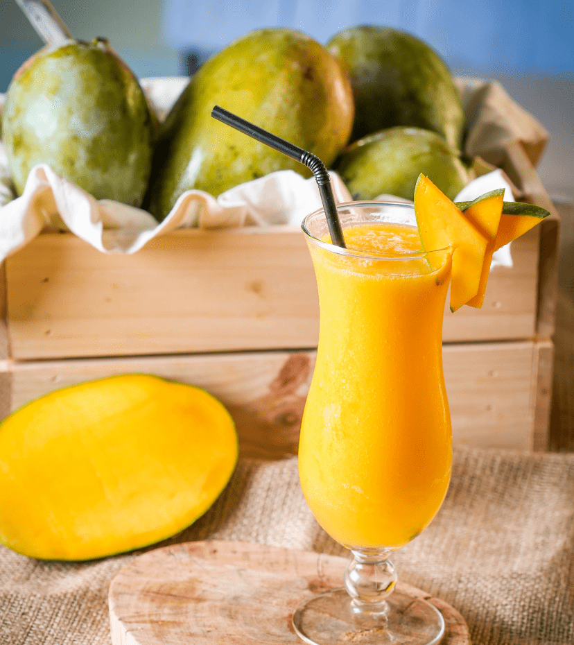
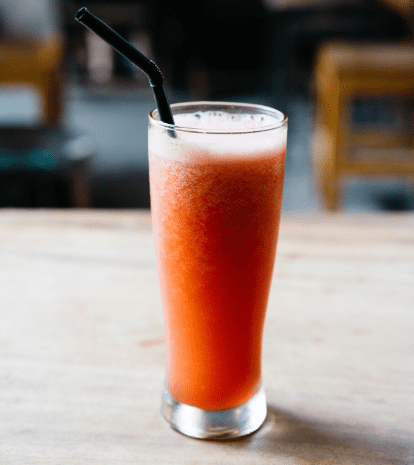
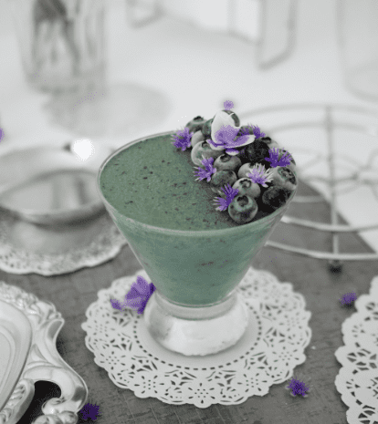
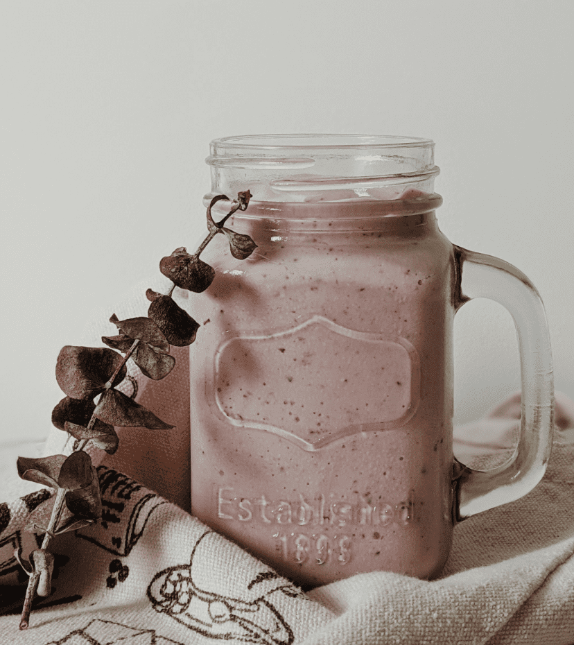
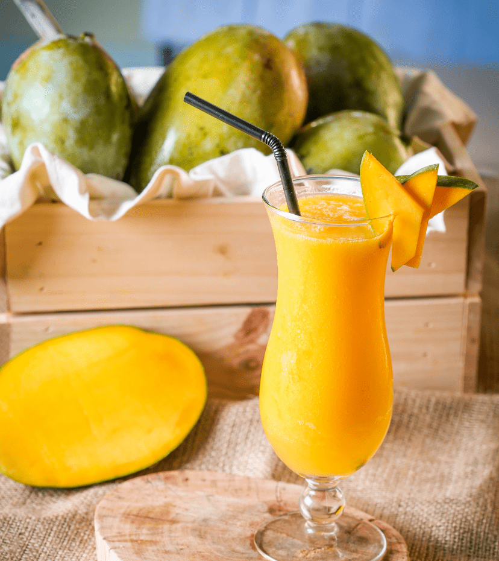
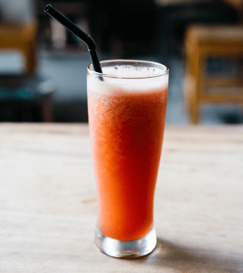
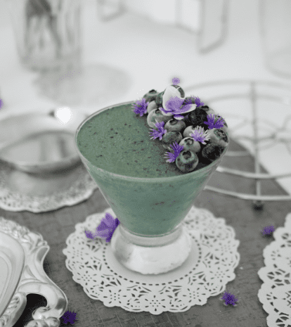
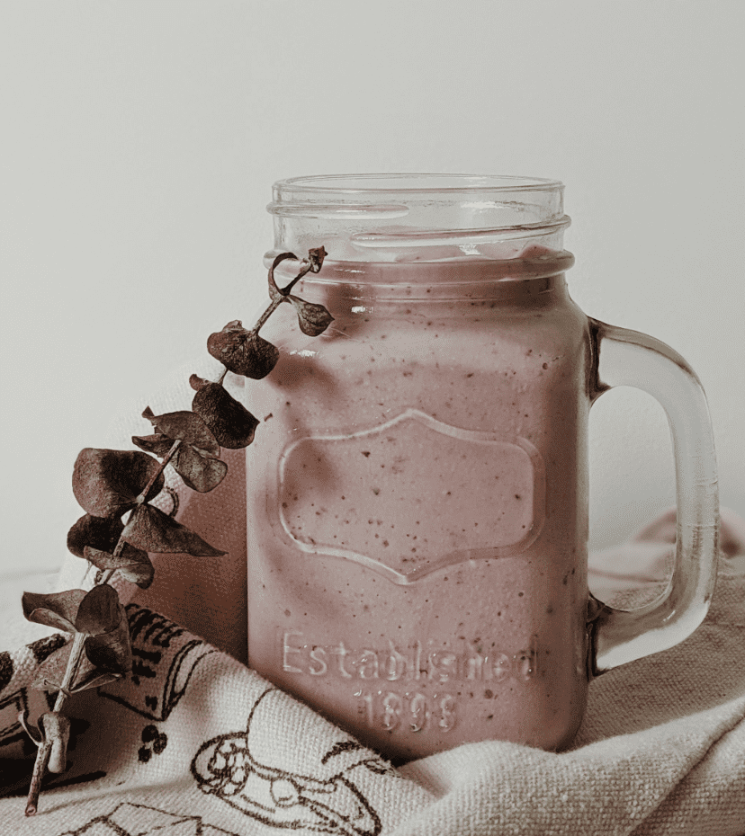

Nos valeurs
Des produits bio
Nos produits, avec lesquels sont confectionnés nos smoothies sont tous certifiés issus de l’agriculture biologique. Nous mettons tout en œuvre pour vous servir des produits de qualité.
Un esprit convivial
Venez déguster nos délicieux smoothies entre amis, en famille, après le travail, ou bien tout simplement pour un moment de détente. Notre merveilleuse équipe est là pour vous accueillir.
Une vraie expérience
Découvrez des saveurs dont vous ne connaissiez pas l’existence. Du simple banane-kiwi au coco-graine de chia, il y en a pour tous les goûts. Un voyage culinaire garanti !
Nos smoothies & jus
 







Notre communauté
Les dernières recettes
Le rouge
Dans un premier temps, verser un verre de jus de fruits dans un blender, puis ajouter le yaourt et la glace puis mixer.
La triade
Éplucher les fruits. Peler la banane, retirer le trognon des pommes et les extrémités des kiwis. Couper l’ensemble en morceaux.
Le multi
Épluchez la poire et les pêches. Les coupez en morceaux. Pressez l’orange. Mettez le tout dans le mixer et ajoutez les gouttes de citron.